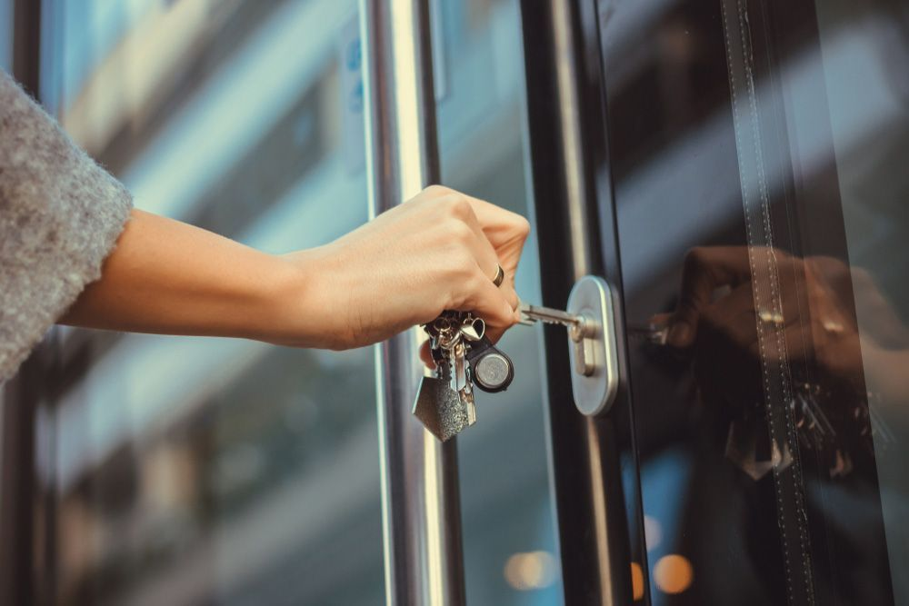
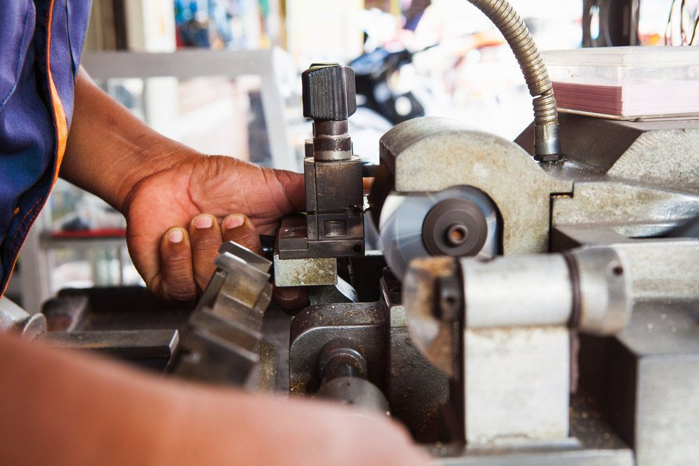
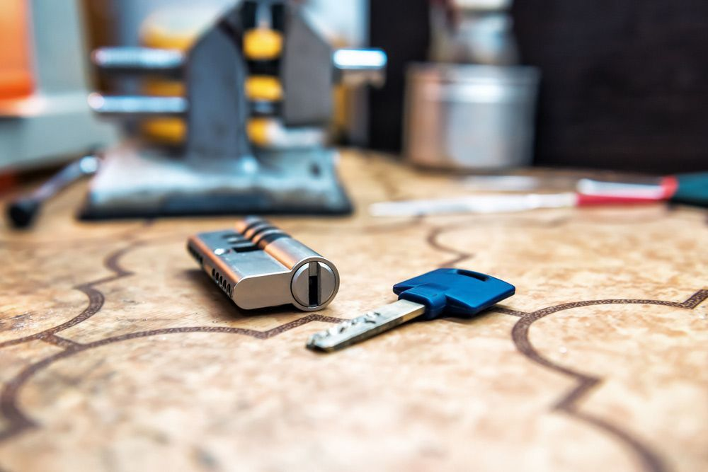

On this page
AT A GLANCE
At SPL Security Solutions, our mission is to ensure your peace of mind with our locksmith services in Pimpama.
Get A Free Quote Now!

Residential, Auto & Commercial Solutions
At SPL Security Solutions, our mission is to ensure your peace of mind with our locksmith services in Pimpama. We're dedicated to offering comprehensive solutions tailored to your individual needs—whether for your home, business or vehicle.
Our team takes pride in their mastery of the latest security technologies, enabling us to provide innovative solutions to lock down your property. These include advanced locking mechanisms, keyless entry devices, patented key designs and more—all designed to fortify your property against unauthorised access. We also offer a range of automotive locksmith services, providing state-of-the-art solutions for transponder key replacement, rekeying and broken key removal.
For more information on our comprehensive locksmith services, call (07) 5588 8111 today.
Pimpama homeowners can sleep soundly with our residential locksmith services keeping their homes secure. Our team offers efficient lock installations, timely repairs and preventative rekeying to keep intruders at bay. Additionally, our key duplication service ensures you have a spare set of keys for emergencies and our 24/7 lockout assistance is always available.
Pimpama businesses can leverage our commercial locksmith services to bolster their security systems and protect their assets. We install advanced high-security locks, master key systems and access control solutions tailored to meet the unique needs of your business. In addition, our team provides emergency assistance 24/7 to ensure you're never left vulnerable after a break-in.
Our automotive locksmith services in Pimpama offer drivers swift and efficient solutions for all their key-related needs. From lost or damaged keys to malfunctioning ignitions, our team has the expertise to help. We also provide transponder programming and 24/7 emergency assistance for those urgent situations. With us by your side, you'll never have to worry about being stranded without help.
Our restricted key systems in Pimpama utilise patented designs to prevent unauthorised duplication, providing an elevated level of security for businesses and organisations. By enabling precise control over who can duplicate keys, our solutions offer a significant reduction in the risk of security breaches. We can customise these systems to ensure they meet your specific security needs.
Our safes in Pimpama offer a high level of security against theft, fire and other external threats. We provide a range of options suitable for different needs—from protecting personal valuables to securing business assets and confidential documents. Our services also include installation, maintenance and emergency unlocking assistance, ensuring your belongings are always protected yet easily accessible.
We provide a range of security systems designed to give homeowners and businesses more control over their Pimpama properties. Our solutions include CCTV cameras, alarm systems, access control and intercoms for comprehensive surveillance and monitoring capabilities. We can help you design a tailored system that meets your specific security needs and budget.
Pimpama properties benefit from our lock hardware including traditional locks, digital keypad systems and reinforced deadbolts. These solutions are designed for long-lasting protection and usability.
Our door hardware options include sleek handles, durable hinges and efficient door closers. These products provide reliable performance for both residential and commercial properties in Pimpama.
We supply premium fire-rated door hardware, sleek door closers, and stylish handles, combining practicality with aesthetics to enhance any architectural style in Pimpama.
24/7 Emergency Locksmith Services
When you find yourself in a bit of a sticky situation after being locked out or having suffered a break-in, our team at SPL Security Solutions is here for you around the clock. We extend our 24/7 emergency locksmith services throughout Pimpama, ensuring you're never left in a lurch.
Our swift and professional response will ease your stress, providing timely solutions such as on the spot lock replacements, key cutting, rekeying and thorough security assessments after a break-in. Our state-of-the-art mobile vans, kitted out with the latest locksmith technology, enable us to deliver our services right on your doorstep.

Contact Details
24/7 Emergency Locksmiths or Security Tech


Trading Hours
Retail Shop

Frequently Asked Questions
-
How do keyless smart locks receive power?
Keyless smart locks typically receive power from batteries, which are housed within the lock itself. Some models offer low power warnings to indicate when batteries need replacing and others feature emergency power options such as external battery terminals that allow you to temporarily power the lock if the internal batteries are depleted.
-
Can I use graphite powder as a lubricant for my locks?
Graphite powder is a dry lubricant and can be used for locks, but it's typically recommended for interior locks that are not exposed to weather elements. For exterior locks, a silicone-based or Teflon-based lubricant is often more effective as it repels dust and dirt better and withstands temperature variations.